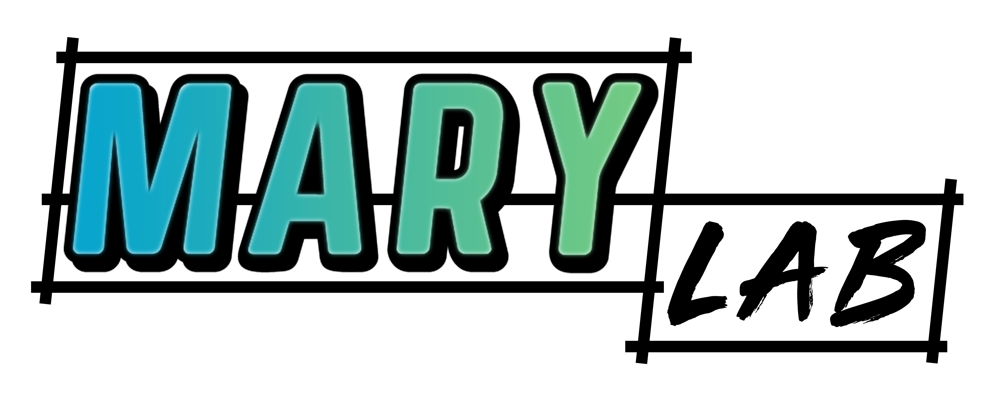

C'est ici que notre aventure commence !
L’entreprise DIGALLLE X a été fondée par Léopold Di Gallo, aka le fondateur, en février 2022. Son nom est, à l’origine, né d’une boutade autour d’un identifiant de connexion octroyé au fondateur, « digallle », par son école, l’ESEO. Il s’est vu surnommé, par la suite, avec le doux nom de « La Digalle ».
Étant fier de ce surnom, le fondateur a décidé de l’utiliser dans divers cas, dès que cela était possible. Le but étant de pouvoir identifier le fondateur par le biais d’une entité, et sous-entités, avec un nom inspirant l’humour, l’innovation ainsi que la qualité d’un travail bien fait.
Un exemple d’utilisation de la DIGALLLE X fut lors d’une partie, en collaboration avec le , d’un futur grand jeu vidéo de conception et de gestion d’usine en monde ouvert, Satisfactory. Son utilisation a permis de regrouper en différentes sous-entités, des usines ainsi que des infrastructures permettant la progression dans cette partie.
Le champ d’action de la DIGALLLE X ne s’arrête pas seulement aux mondes virtuels mais s’étend également au monde réel avec la création de contenus numériques (conception de logo, montage de vidéos avec effet spéciaux, créations web et logicielles) ainsi que le développement de matériels permettant de répondre à des besoins encore non comblés par les grands de ce monde. (Voir la page "Mes projets")